来源：https://balfcirt91j.feishu.cn/docx/A2b5dr9hOogoaxxzXM4cLreenUb
先来做个自我介绍：我是菜菜，我有 13 年的互联网内容营销经验，是人人都是产品经理的专栏作家，也是三节课的特邀讲师，目前专注在ChatGPT营销内容创作方面，主要是帮助大家掌握如何用ChatGPT打造文案印钞机，在公众号、小红书、短视频、朋友圈等平台，把自己的产品或者服务宣传出去，更好地做变现。
我是菜菜，我有 13 年的互联网内容营销经验，
是人人都是产品经理的专栏作家，也是三节课的特邀讲师，
目前专注在AI+营销领域，主要是帮助有卖货需求的企业和个人，掌握如何用ChatGPT打造营销内容，高效做引流、产品宣传推广、成交等。
我目前在三节课的学员是5000+，同时也是生财有术 ChatGPT航海教练、生财有术航海家俱乐部成员、AI破局俱乐部合伙人
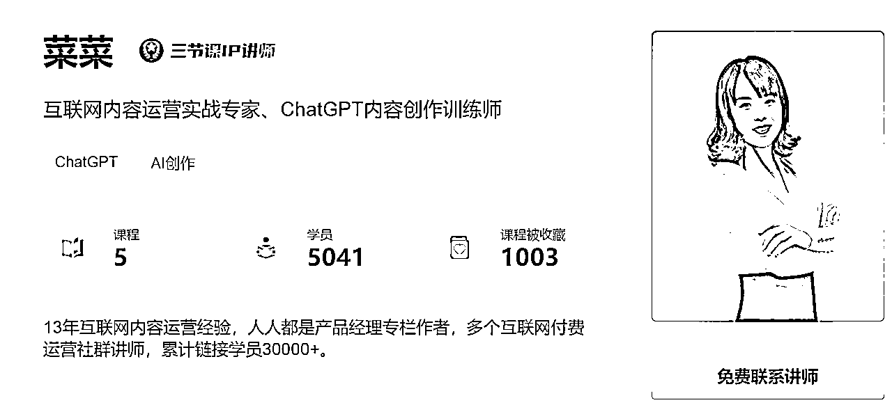
我通过 ChatGPT ，从2023年2月开始，大概在一年时间变现了 11 万，
然后2024年3月开始全职创业，目前变现达到了22万。和很多大佬相比，我这是很小的成果，
但是对于我自己来说是一种突破。
我今天的分享，没有任何的推销内容，含广告率为0，大家可以放心听。
我相信很多大龄职场青年，可能都会跟我有同样的感受——焦虑。我目前是在线下教培行业，我们公司是做培训机构的数字化管理工具的，三年的疫情，再加上双减政策，我们的行业遭受了重创，公司的收入相比前几年是大大减少的，为了能够保存公司这个生命体，我们公司和大多数公司一样，采取了降薪措施。
那会每个月少了1000到2000元，对于一个二胎家庭来说，还是有较大影响的。
第二个裁员，并岗，真正接到裁员通知的人可能还好，而没有接到通知的，你永远处于一种恐慌当中，因为你不知道哪天你会接到这个通知。
再加上年龄问题。都说35 岁是道坎。如果你在35岁还没有做到管理层，接下来职场的晋升的通道就会被关闭，很多公司不招35岁以上的员工。
而我是85年的， 去年是38 岁，所以对比其他人，我的这种焦虑感更加突出。
第四个被替代或者边缘化。公司为了获得第二增长曲线，超越生命周期，希望能够引进一些新鲜的血液。去年那段时间有很多北上广深的大厂，也进行了裁员，释放出了大量的人才。像我们这种在公司做了多年的老员工，在老板的眼中，思维和理念肯定是比不上那些大厂出来的人才的。
我记得是在 2022 年的 10 月份，老板空降了两个 90 后的领导，而且是在 他们达办公室10 分钟之前，告诉我和团队，我们部门要空降两个领导，感觉是非常痛苦的。
虽然很快调整了心态，想着能和他们学习到先进的经验，也是一件好事。可是还是止不住的焦虑，担心自己失业。
晚上回到家，看着孩子天真无邪的脸庞，我就觉得好像对不起家人，我连工作可能都会丢掉，呢？那怎么办？只能自救，对不对？
那时候我就开始了一些动作，比如说我去投简历，那时用的是 boss 直聘，我记得我在35岁之前，只要一投简历就会有公司给我打电话，可能短短在一个月之内，我就能够接到比较好的offer。
但是我那段时间，把简历改了又改，投了 200 多份简历。要么是已读不回，要么是回复：“不好意思，您的相关情况不太符合我们的职位”。
还有更扎心的，可能你们想都想不到。HR很直白地回复：你的年龄太大了。简短的几个字，你的年龄太大了。他真的让我特别受伤和委屈。我们80后，怎么也是成熟稳重，又富有经验的一个群体，为什么会像弃妇一般，年老色衰了就把我们一脚踢开。
我在抑郁了3天之后，给这家企业反手来了一个举报，举报他歧视大龄职场人士。
刚才讲了我比较惨的部分，这次分享不会都是这个基调。今天的分享一定会让你有如下收获：
1.帮助大龄职场青年建立信心；
2.对于还没有变现经验的人来说，如何赚到第一笔钱。
3.如何破除内卷魔咒。不管是在职场还是在创业当中，我们都会面临非常剧烈的竞争，我们如何去跳出竞争，让自己获得非线性增长？
4.获得一条成长公式，我把我怎么样一路成长的经验，总结成了一个逻辑、方法论。这个公式不说多了，我觉得它至少值19.9元。
我先来介绍一下这条成长公式：
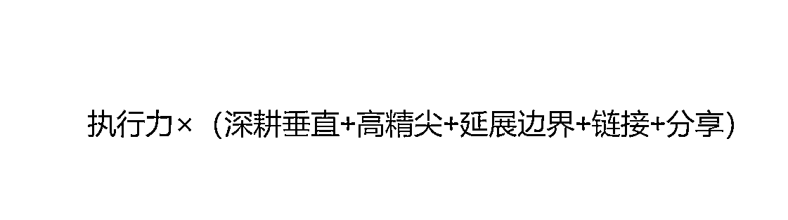
首先来说是执行力。据我十多年的工作经验与观察，很多人焦虑，很大程度上是来源于对未知的恐惧，你不知道将来会怎么样，但是，破除它的方法有且只有你去干，先执行了再说。
比如说你目前在做一个产品，你觉得目前市面上，竞争对手的价格会比你的低，而且他们的用户评价还不错，你会焦虑，你会恐惧。与其在家中焦虑，不如走出去研究竞争对手，去研究他们的优势是什么，你的优势是什么，用户他们到底要什么，马上去做，马上去改进，相信我， 100% 你会破除焦虑。
这个执行力除了包括做之外，还包括输出，做了之后马上要去展示或者分享成果。
我确实是一个执行力比较强的人。我大概在 2023 年 2 月份的时候，看到了生财上有一篇帖子，上面讲到了ChatGPT，其实 ChatGPT在2022年11月、12月就问世了，我算是知道得比较晚的。 我看了帖子之后，我当天兴奋得一晚上没有睡。
我就去研究了一下官方的文档说明，再想了一下，如何结合内容生产领域去做，第二天我就马上用 ChatGPT 去做文案输出。
我记得我当时输出的第一个案例是培训机构的课程销售话术。上面讲到我做的是 ToB 行业，我的客户都是培训机构的从业者。我训练了一个助手，通过和用户对话，我扮演家长，它扮演课程顾问，一问一答生产销售话术，效果很不错，我发到了朋友圈，当时就引来了大量围观。
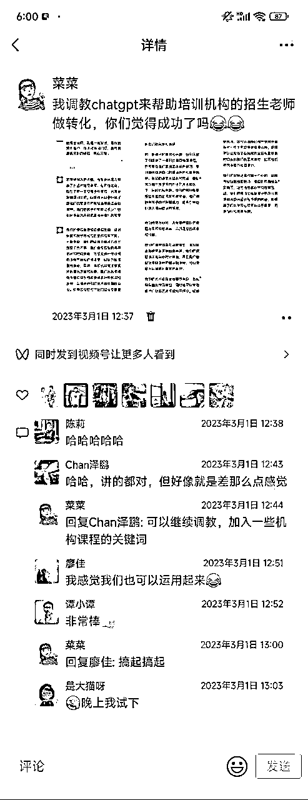
因为在当下有很多人还不知道ChatGPT，他们觉得挺新鲜的。所以你看，我做了之后就马上去输出，总会对一些人有用。有了这样的正反馈之后，就会激励你持续不断地做。
后来我源源不断地在我的朋友圈分享，包括销售话术，包括我是怎么样用它去写小红书文案的，怎么样用它去学习Excel，这样子持续不断地去边做边分享，每天就有很多人给我点赞。
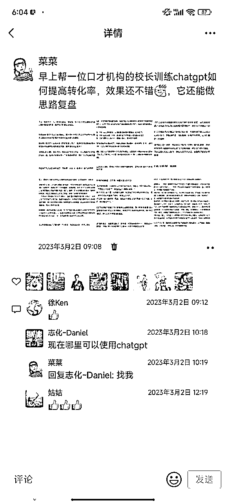
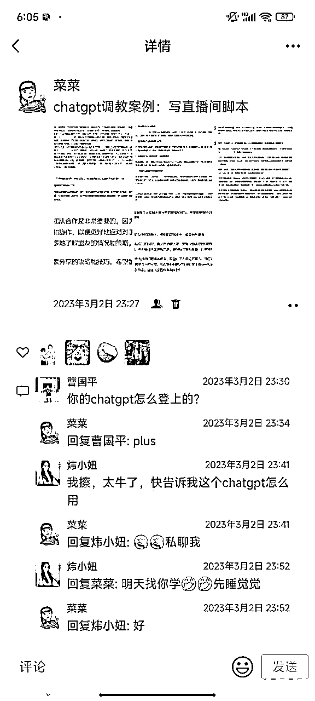
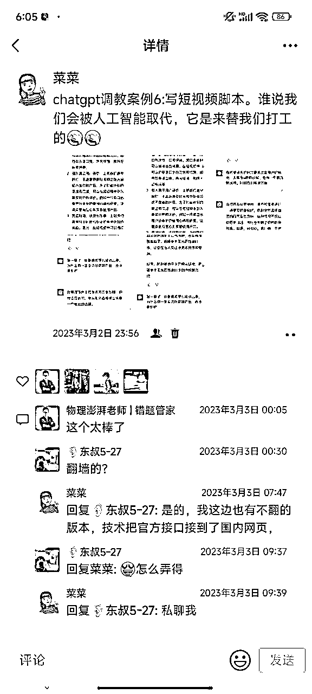
再举一个今年1月的例子，我在1月初的时候，加入了AI破局俱乐部的合伙人，大概花了 5 位数加入的。当天晚上加入之后，我就把破局里大概 480 多位合伙人，他们目前在做什么项目，我全部去看了一遍，还有精华帖，我大致都浏览了一遍，去分析。
如果接下来我要在 AI 领域，那么我可以去占据哪个生态位？
我怎样去做定位？
我本来是做ChatGPT自媒体领域，后来看到AI破局里的合伙人很多非专业领域的技术都在做，
我就觉得这个行业比较卷，同时也凸显不出我的专业来。
于是我就马上转了AI+营销领域，目标人群从普通人转为创业者和个人IP，
后来证明我选对了，因为这个领域对人的要求更高，竞争少一些，
但市场前景比培训普通人更大一些，因为直接和商业挂钩。
转了之后，自然收益也会更好一些。
还有包括像运营圆桌会的大国老师这边，我应该是2023年 5 月份成为合伙人，不到一个星期，我就马上就做了ChatGPT内容教学的课程，在大国老师这边去做分享，效果还是不错的。
这里我还要给大家讲一下，我一位超强执行力学员的故事。我最近在做 AI 内容营销 100 节课，前5节课就是在讲，如何用 AI 去做公众号流量主，改写十万加爆文，获得平台的流量收入。我这个学员特别有意思，他应该是在 12 月 18 日买了我的课，在看第一节课时，他问了我一个问题，你们绝对想不到是什么，他说：“老师，你发的这么大一长串的文字（其实指的是提示词），我到底是输在哪里？我到底是分段输入还是整段输入？”
如果你们在用ChatGPT，你们可能会觉得不可思议，怎么好像 ChatGPT的基本使用都不知道，就去报了课，但是他凭借着他强大的执行力，他每天蛮干几个小时去做改写。不到一个月，他就出了成果。
他出了2篇十万加稿子，第一篇达到了 56 万（后续涨到70多万），一篇文章就赚了 4, 000 多块钱。 第二篇，早上7点发的，当天11点就破了十万加，而这至少是700元到手。而另外一个没有爆十万加的账号，从 半个多月也已经有 3, 000 的流量收入，所以大家看，只要执行力超强，听话照做，一个月稳妥的8000，这不香吗？
后来，我才知道这位学员其实身体不好，有强直性脊柱炎。你看，这么艰苦的情况下，他都能坚持执行，我们还有什么理由不执行呢？
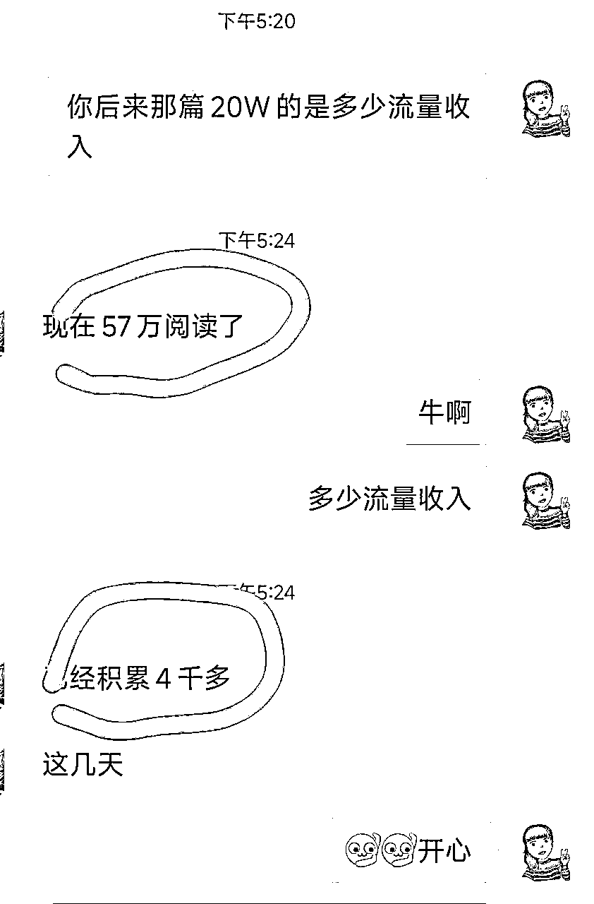
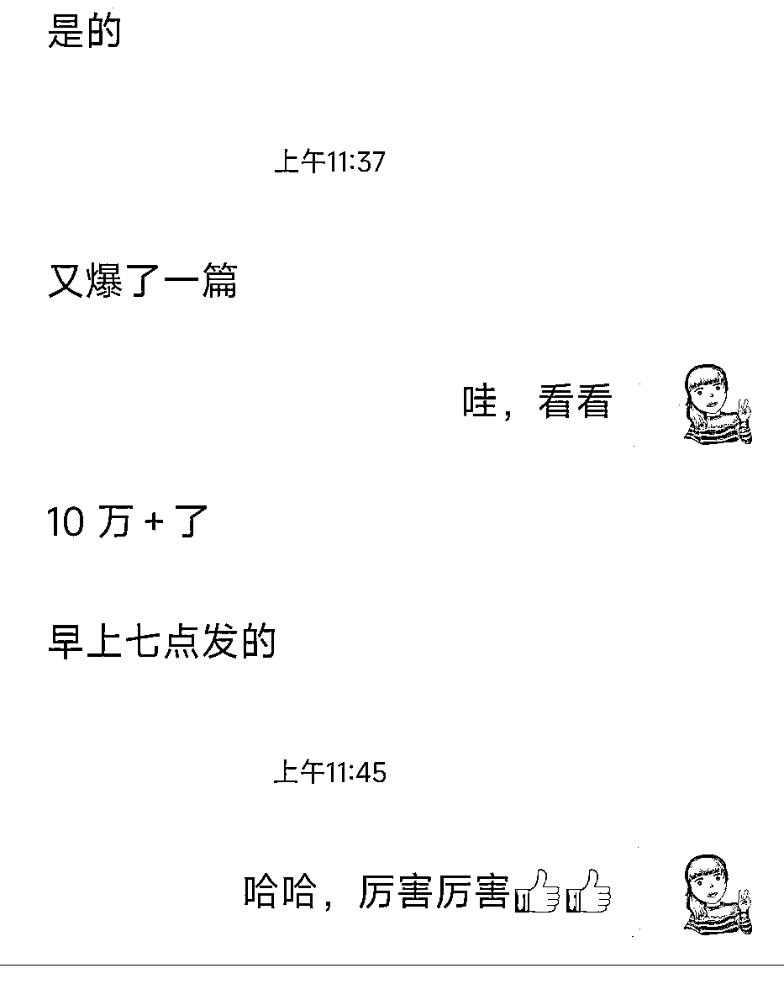
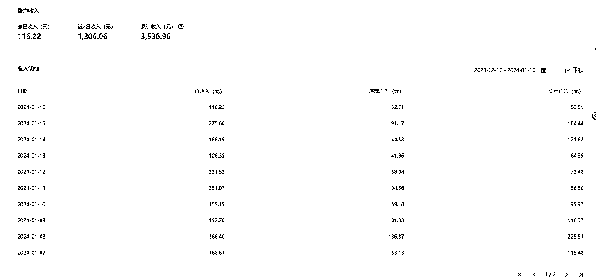
我这边还有一个学员，50多岁了，航空公司退休，衣食无忧，但是想发展事业第二春。
她也是持续学习40多天，通过做代写，赚到了人生中第一个除工资之外的1000元。
后来她做了职场IP，开启了接单+流量收入+职场辅导的生涯，平均每个月在4000-6000+
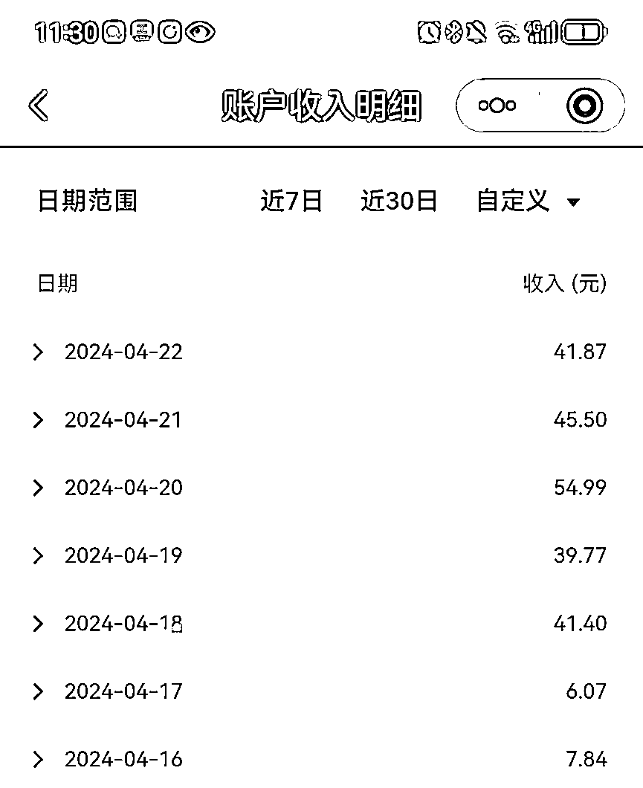
所以说我说执行力永远是排在第一位的。
因为我十几年的经历，我发现我自己一直深耕在内容生产领域，这里也给大家介绍一下我的工作经历。
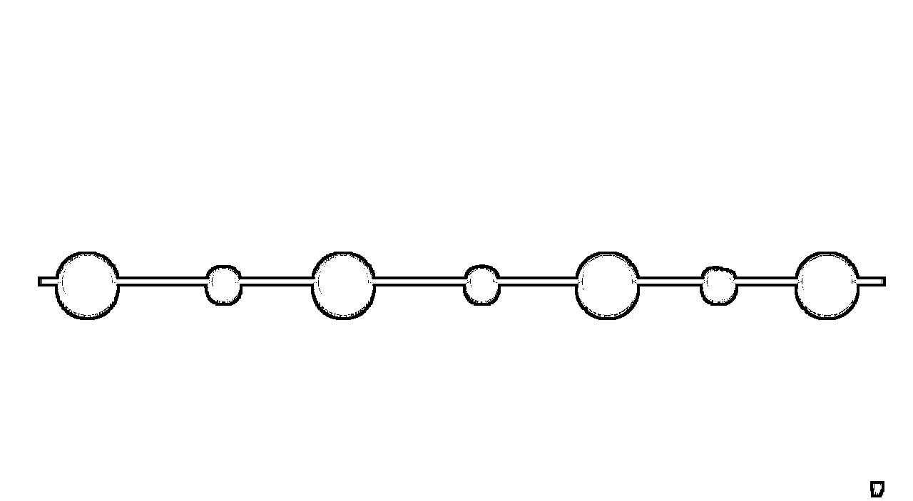
从 2007 年到 2011 年，大概四年的时间，我是在事业单位——长沙电视台做记者。第一份工作就是做内容。
2011年，我从传统媒体行业跳到了移动互联网行业——新浪微博，当时也是站在了风口上，我通过内容创作以及活动运营，带着团队做了1年半，做出了一个长沙本地的美食大IP，六 十万粉丝。
在 2016 年到 2018 年是公众号的风口，我去了一家健康电商公司，我从0开始组建了新媒体团队，去做了一个科普营养健康的账号，当时做到了新榜健康领域的前 20 强
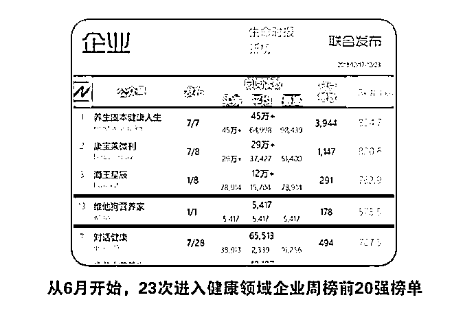
被人民日报和科普中国多个平台转载，也出了多篇 10 万加。
那可能你们也会疑问，为什么人民日报、科普中国这些平台会转载，我等一下给大家揭晓答案。
2019 年时，出现了今日头条的风口，我跳槽去了一家三甲医院，我们团队就带着 100 多名医生去打造医生IP，当时就成功打造 3 名医生IP，帮助他们获得了多个今日头条的青云奖。
所以你看，为什么要在一个领域深耕？因为你能洞察到风口和机会。
你如果今天去做内容，明天你又去转做 销售 了，那你可能就很难抓住机会。
在 2019年底， 我就来到了现在的这家公司，我也是去深耕内容领域，在一些垂直的互联网内容平台，像人人都是产品经理，芥末堆去做内容连载，写着写着，就成为了专栏作者。
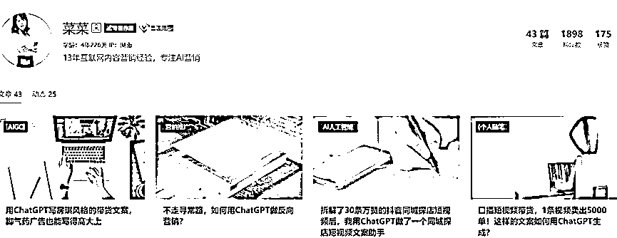
后来短视频、直播火了起来，我在 2022 年就开始做这方面的内容生产，从文案撰写、到拍摄剪辑到内容运营，包括直播带货，都是我一个人去操作的。当时大概一个月可以拿到十条线索，转交给销售，也有成交，客单价大概 4, 000 多元，当时大概做了几万块钱。
同时也联合我们的客户——许多头部机构，去做企业直播做资源置换式的获客。
通过短视频直播这样的平台，我们的获客成本相较于百度投放下降了66%。
转眼来到了 2023 年，2月份就开始去研究 ChatGPT 了，别人都在做工具、信息差相关，而我依然深耕在内容创作领域，用它来创作内容。所以说深耕垂直领域是非常重要的，因为你的行业经验会积累在这里，而且通过数量的堆积，那后续就会引发质变。
而且我要告诉大家一个信息，我所接触的目前在AI领域做得比较好的大佬，
这其中很大一部分，并非技术、或者本来就是从事人工智能行业的人，
而是那些在垂直领域有很好的造诣，恰巧又能驾驭AI的人。
AI+教育、AI+个人IP、AI+产品经理……都是非常好的赛道。
AI能把所有的行业重新做一遍。
你问下自己，你是不是把自己专长丢掉了，现在却在跟风做一些AI热门的项目，比如AI+老照片复活、AI+代写等等，
我建议你把目光放在自己深耕的领域上来，用AI重新去解构一遍，出来就是很好的解决方案，就能赚到钱。
我是一个蛮较真的人，在内容的质量上非常较真。我是在品牌营销部，比如说销售部下达任务，要我们写产品宣传文案。其他同事写，可能就会草草地写，但是我不一样，我要去追着销售、追着产品、甚至追着客户，去了解这个产品会对应哪一些工作场景，去调研我们和竞品相比，到底有什么区别？
写一个文案，我会要做一轮详尽的调查，去收集资料，我才能够写出来。
这其实也是我在接触文案这个工作之初，就有意识地去学习专业、系统的方法论，比如定位、金字塔写作法、痛点文案……
即便是在内容的风口，大众可能对内容要求没有那么高的时候，我依然是用高标准来要求自己。
我记得在公众号盛行的 2015 年，我带着团队，把丁香医生的自媒体课程，完完整整地学习，而且 1比1 去复刻他们的流程，去把专业基础打牢。至于我为什么会这样子对自己高要求，可能也源于我的原生家庭，父亲是非常严格的，对我预期很高，在这个过程中，我也慢慢习惯了这种状态。
所以，深耕之后，让自己保持在高精尖的状态中，去向行业里最牛的人请教，这样才能建立难以被超越的竞争壁垒，做难而正确的事情。凯叔不知道大家是否熟悉，就是凯叔讲故事的创始人，他讲过，在高位处的竞争，其实没什么竞争，非常容易。如果在中位和低位竞争则非常激烈、非常卷。我们如何告别内卷，不论是在职场还是在创业的阶段，我们都可以通过这样的方式去做，做难而正确的事情。
比如那会AI+代写很火，有个大佬邀请我去做AI代写教练，我婉拒了，送上门口的钱我不赚，为什么？
一是和我的定位不符，我是做AI+营销领域，二是因为我懒。
真的是懒，我不想以后频繁地换赛道。为什么？因为我意识到，这个项目门槛太低了，以后会越来越卷。
我宁愿前期苦一点，我想在高位竞争，我不想做副业也好，还是创业也好，在不同的赛道跳来跳去。
后来再一次证明了我的预测，现在AI代写已经低价到你想象不到了。
当然，如果想短期赚一笔的小伙伴，可以忽略这一条。
这有点像玩网络游戏，你遇到了boss，第一次打，没打过，那就把新的招式学会，再去打。这样组成组合拳，你就能打败boss。
举个例子，我当时在做自媒体的时候，我本身是专注在内容这一块的，但是如果你只专注在内容，你不去做用户的运营，你很难把你的账号做得很出彩，很难去形成裂变。于是就去学习运营的技能，去学习如何跟用户沟通。看的第一本运营的书，就是黄有璨老师的《运营之光》，还有当时非常火的《黑客增长》，这两本书给了我非常大的帮助。
还有，做了管理层之后，带团队作者，涉及到向上沟通、向下管理，于是也适当地学习了一些管理技能，包括在 2020 年，这也是破局创始人洋哥预测的、今年一个比较大的风口——教练技术，也是因为要做团队管理，而去拓展的技能。我发现通过技能的组合，在我做ChatGPT技能训练的时候，我确实比同行能更好地解决问题。比如我在做学员辅导的时候，运用教练技术，就不是生硬地告诉他应该怎么做，而是通过询问他目前的现状，引导他自己找到解决方案。这样一来，我和市面上的老师是有差异化的，于是也能积累不少铁杆学员。
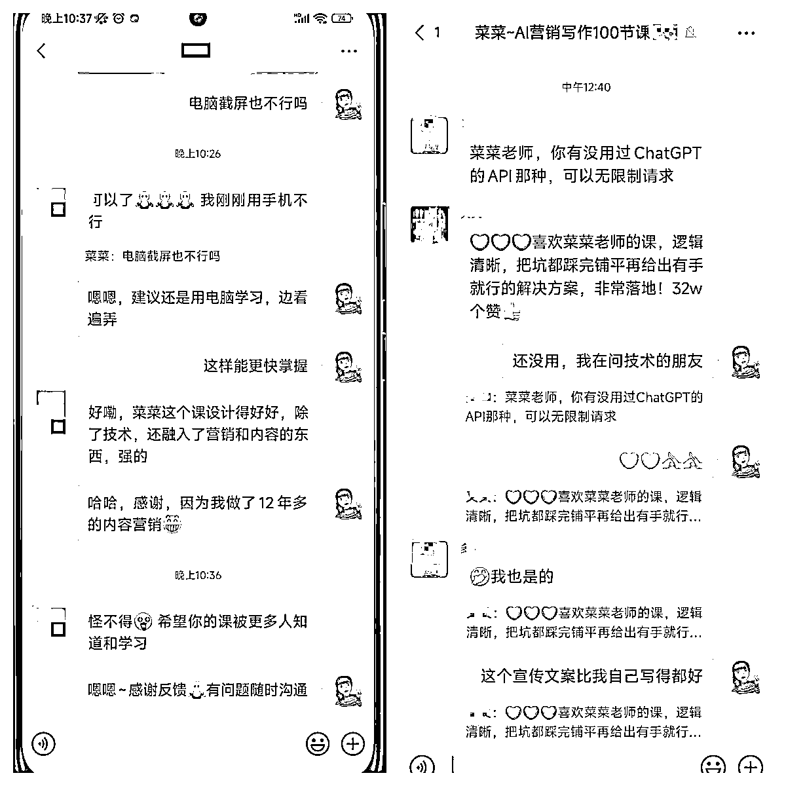
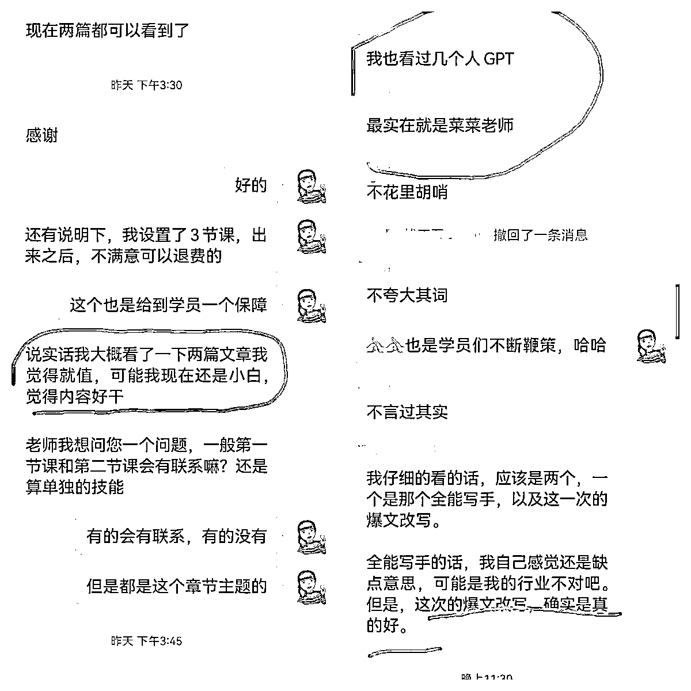
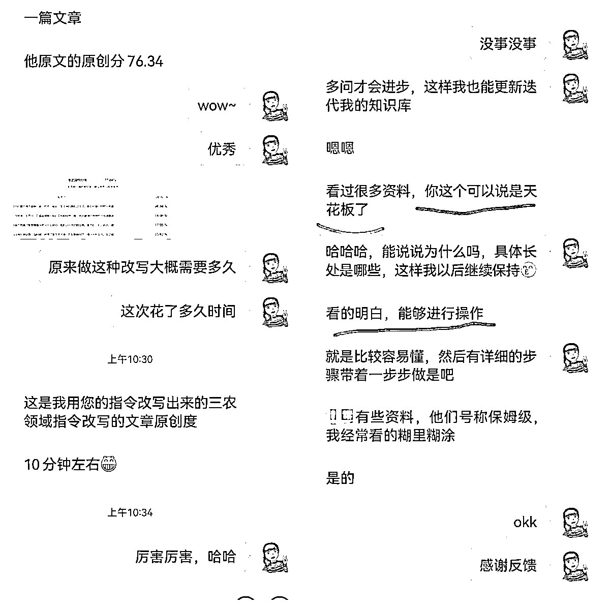
大家刚才去看到我的职业生涯，里面有一段经历，人民日报、科普中国都转载了我们的文章，那是怎么回事？你们可能永远都猜不到是怎么回事，是什么？基于我盲目的自信心，我觉得我的内容特别好，我自己去给人民日报的小编留了言，我说，我内容特别好，我们的内容能给大家很多帮助，希望贵公众号转载。
就是这样子来的，你们可能想不到吧？人民日报，国家级别的新媒体账号，他会理你嘛？但是我当时那样盲目的自信，我这样去做了，人家给我回复了，我还记得老师姓李，她加了我微信，看了内容后，觉得内容还挺不错，因为我们用漫画的形式去讲健康科普，她觉得很有意思，就转载了。一共转载了2次。第一次我们就爆了。我们应该是整个新媒体行业中，为数不多的、被人民日报转载的公众号。我还记得当时我们老板特别高兴，给我们团队奖了 2, 000元 。
我当时还把这个经验分享到了西瓜君公众号（聚集各路作者的平台账号）上
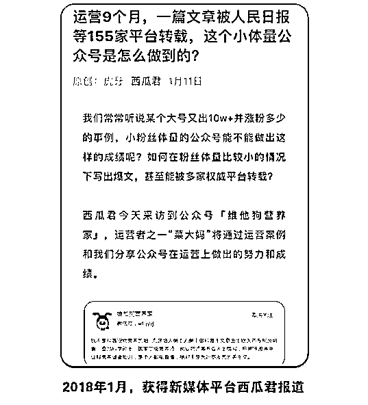
我们不但发给人民日报了，还发给科普中国了，还有像华为运动健康这样的平台，我记得我当时一边写稿，一边去链接这些平台，去给他们公众号去留言，积累了500 多个平台
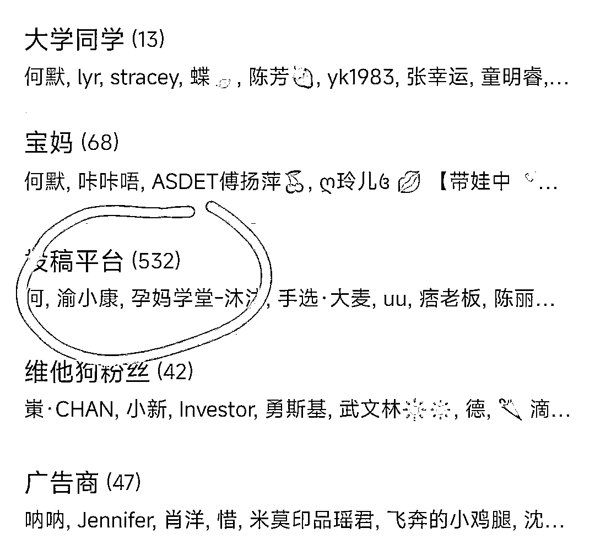
只要我们的稿子写好了发出，他们就会转载。
就这样，我们的声量慢慢铺开了。我们的公众号当时没有花一分钱去做推广，积累了 4 万多、精准的健康粉丝。通过链接，当你的资源累积到一定量的时候，它就会发生复利效应，比如人民日报的老师，她就给我介绍了人民卫生健康出版社的老师，人卫的老师邀请我们去参加了国家级的科普辟谣大赛。当时我们的内容获得了二等奖。
人脉也是我们链接资源中的重要部分。这里我特别要感谢一下运营圆桌会的创始人大国老师。
我跟大国老师结识，是基于他做资料整理非常强，把这些资料作为引流的产品，吸引了大量互联网从业人员。我也是因为引流资料而加的大国老师。加了之后，基于我强大、盲目的自信，我联系大国老师：我能不能来你们平台做分享？因为当时我在人人都是产品经理、运营研究社这些平台去做分享，反馈还不错。
当时也没有想要变现，只是纯粹的享受在聚光灯下的感觉，我希望去证明我自己的价值。大国也表示，之前看过我的内容，觉得很有深度，质量很高，于是给了我一次机会，让我做了分享。大家反响还不错，他们社群的会员还加了我微信。一次机会你把握住了，就有下一次机会。在机缘巧合的情况下，我也知道大国做了合伙人项目，他当时也是很诚恳地找到了我，他觉得我的价值是可以放大的，而且在他整个社群生态位里，做内容做得这么高精尖不多，他觉得我可以通过他的平台起飞，大国老师算是我赚钱路上的第一个伯乐。
所以当时我就毫不犹豫地给他付了合伙人费用，这也是当时我在知识付费里最大的一笔。特别感恩，因为我的一个付费产品，就是他推动我生产的。
他当时做了ChatGPT的社群，有用户，但是没有产品承接，他看到我在做ChatGPT内容生产训练，于是建议我做一个课程产品出来，去做变现。做课程产品之前，我先在他的平台上做了一次分享，最后推了我的产品，客单价定得不高，99元。
当天其实我挺焦头烂额的，一是从来没有变过现，二是当时我的女儿在发烧，我又要照顾女儿，又要做分享。没想到做完分享之后，有 50 多个人直接给我转账，这给了我很大的正反馈。
所以说在你的赚钱道路上，人脉资源是非常重要的，你要去广结善缘，你该付费的你就去付费，如果你能用钱去买到别人十几年的经验，这是很划算的事情，他会通过他之前踩过的坑，他对于行业的一些看法、比较高的认知，给到你指导，这是特别好的。
有一句话我觉得特别有道理，应该是梁靠谱老师说的，她说信息差在认知差面前一文不值，认知差在资源差面前一文不值。所以资源它是在最高位的。你看，如果我不是通过大国老师，我能够一下子招到 50 多个学员吗？不可能。大国擅长搞流量，我专注于产品，我们俩一结合，资源互补，就能够有源源不断、赚钱的路子。
如果你能用钱去买到别人十几年的经验和资源，这是很划算的事情，他会通过他之前踩过的坑，他对于行业的一些看法、比较高的认知，给到你指导，或者把他的资源与你共享，这是特别好的。
再给大家讲一段经历。1月中旬，我花了 5 位数进了破局合伙人。在进破局之前我是有点焦虑的，我焦虑来源于什么呢？我看到目前做 ChatGPT 自媒体的教学，特别卷，别人 9 块9、 19 块 9 都在做，对于我来讲是没有任何利润空间的。
虽然说我在做自媒体方面，可能方法论会更体系和专业一些，但是普通的用户他是感知不到的。所以当时我很焦虑，我该往哪个方向转。那焦虑的时候去行动，去付费、于是我就付费去进了破局合伙人。我通过去研究里面480多位合伙人，去分析整个AI的生态位，我找到了自己接下来要去专注的领域，专门去做营销内容，怎么样去帮助 IP 或者商家做宣传文案，把货更好地卖出去，这也踩中了我的专长，同时我能够不去做和别人做激烈竞争。所以这就是链接资源的好处。
我自从做ChatGPT一来，加了近q000的微信好友，这些都是基于我在很多平台做分享得来的。基本就是毫无保留地分享。
比如我在生财发帖，分享ChatGPT高效对话的六字真经，不但加了许多用户，生财官方还联系到我，希望把内容编进大航海手册，因为这个动作，也有不少人买了我的正价课。
由于我的持续分享AI营销案例，很多人认识了我，说我的发帖必收藏。
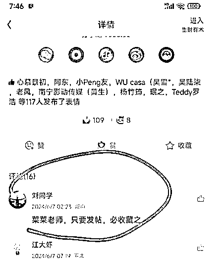
这种影响力也被官方看到了，今年，我也正式成为了生财ChatGPT航海的教练，带了2期，还参与了高手领航的直播，也获得了不错的反馈。
再回溯到我之前在人人都是产品经理写文章分享，写着写着不小心就变成了专栏作者。当然平台没有给我发一分钱流量费，但是能得到别人的认可，能干成这件事，让我觉得自己挺有价值的。日拱一卒，功不唐捐。基于这种持续不断的分享，我也加了几百个平台用户。
很多人一上来就是问我，要和我学习，有没有相关的课程。
我的第一笔咨询付费的客户，就是这样来的，我当时就收了 1, 000 块钱，给他做一个月的短视频咨询。
所以有一句话说，如果你有 1, 000 个铁杆粉丝，你就会活得很好。不说 1, 000 个，你有 100 个铁杆粉丝，我你都可以把你的生活成本赚回来。所以一定要去分享，不断地去输出价值。我是一周至少要写两篇文章，去分享我的经验，分享如何用ChatGPT做营销内容。
我很多学员，也是通过一周两篇文章得来的。我和别的知识付费IP不一样，加了之后，一上来就推课程，甚至会定期发下小广告，如果你想听就回复1。只有300个名额，最后一天。
但是我从来不推，我不断地在平台分享，在我的朋友圈去分享我的洞察和经验，分享我训练的结果，学员的案例，他们自然而然地就主动私信我，甚至直接给我付款。
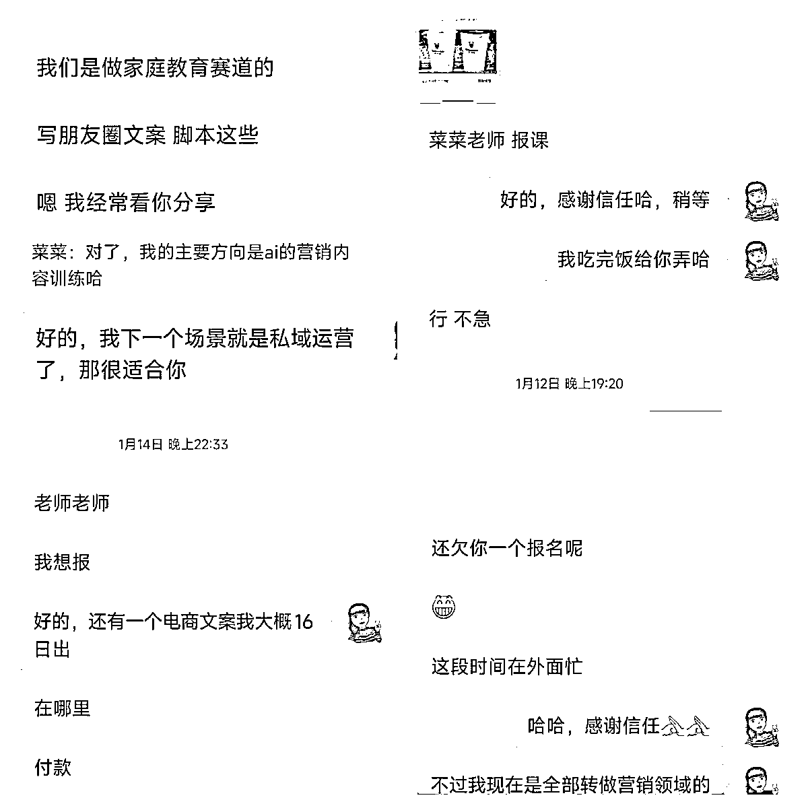
这里也给大家展示一下，我从各个渠道去通过，内容分享，会收集到这样一些精准的用户，我所有的学员都是从里面来的。
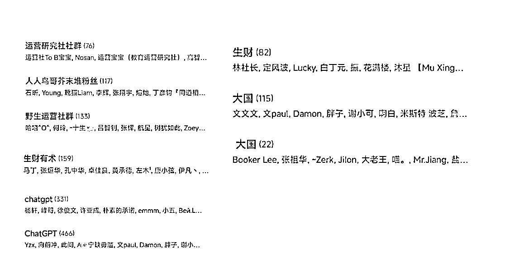
你在副业或者创业的道路上，如果解决了流量问题，你就已经解决了 80% 的问题了，所以说分享是非常好的、帮你去拓宽流量的方式。
可能有的伙伴会说，我搞技术的，我搞医疗的，我不知道该怎么写，我不知道该怎样去做分享。还是那一句话，你要有意识地去拓宽你的能力边界，你去向别人付费，你去学一下怎么写。
还是以AI破局俱乐部为例， 80%的 用户都是程序员，程序员都是理科生，他们写着写着，也能写好。创始人洋哥就是程序员出身，他就是靠分享经验、写文章才能走到今天这一步。破局里还有很多程序员成为了写作导师。
所以不是能不能做到的问题，关键是你到底要不要去做？要不要去突破。
变现的底层逻辑，是你能够去解决用户的问题，而且你给用户的价值，让他觉得是远大于价格的，他就会买单。
比如说我现在做的AI 内容营销 100 节课，我主要是解决什么问题呢？解决个人IP或者创业团队，卖产品的时候，他朋友圈怎么发、产品宣传文案怎么写？怎样去戳用户的痛点，怎样去制定销售策略、怎样去做跟单转化话术内容。
我这边有一些学员，他的客单价是很高的，5, 000- 1万，但是他买我的课程，5999， 他一单的营收就能把课程的成本给平掉，所以在他的心目中，他会觉得超值。
还有我上面提到的那个学员，报课第一个月赚了8000多，他也是觉得超值的。
付费的另一个维度，也是更深层次的，你比同行在解决同类问题时，你的解决方案更好。有句话，说永远有人比你做得更好。如果我们的产品能够比同行稍微优秀那么一点，我们也能够更好地去变现。
比如我是知识付费的重度用者。我看了很多的课程，我发现很多课程，要么是没有实操的经验，更多是理论加上别人的案例，要么是他的课程里面无法形成闭环，我不能根据他的方法去完整落地。
所以说我在开发课程的时候，我就会考虑，我怎样去超越同行，让用户有更好的体验。他一旦买了我低价课之后，发现很优质，于是他对菜菜产生信任，他就会去买我的高价课，所以说我们要不断地去迭代自己的产品，比同行解决得更好，你也能告别内卷。
第三个层次，你能够解决同行解决不了的问题，占据一个重要的生态位。比如现在市面上有很多教小白如何写作的课程，也很便宜， 9 块 9、19 块 9 。但是如果是用 ChatGPT 去解决怎样写小说、怎样去写卖货文案，目前是没有很好的解决方案的。
我在 11 月时，在 5118 上，就洞察到了“ ChatGPT 写小说”这个关键词，网络搜索度很高，当时我也去搜了一下市面上的教程、用户的反馈，都没有特别好的。他们就判断说 ChatGPT 写不了小说。
那我就偏不信，我就买了三本教你写小说的书，把书全部看了一遍。再把里面的方法论经过自己的萃取，再教给ChatGPT，我就出了整套ChatGPT 写小说的方案。学员买了我的解决方案之后，他就说，菜菜，我看了市面上很多的小说方案，你是最详实、最能够解决问题的，他当时大概跑了半天，就能够顺利地去写小说了。
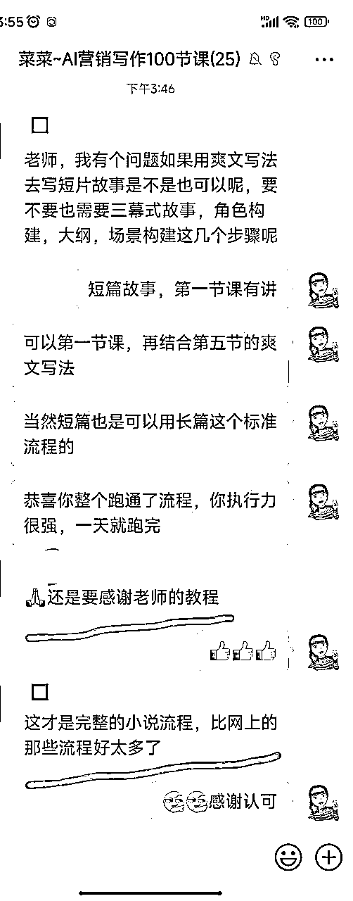
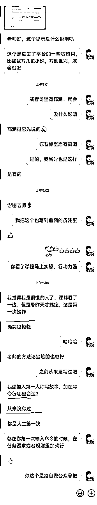
说到具体的赚钱，我来讲一下我是怎么做。很多人一上来就设定目标，我要先赚个1万，或者秒入1万我才觉得，这叫赚钱。但是我当时给自己定的目标，并不是这样的，而是，我能不能先赚个一块钱、两块钱，
我赚钱的第一件事情，先去批发了 500 个账号，一个2块钱的成本，我 5 块钱卖出，就这样卖一个赚 3 块钱、你赚到了第一个 3 块， 5 块，你接下来才有动力、才有信心去赚9块9、99、199。
紧接着，我开始做9.9的项目。这是怎么来的呢？因为我之前深度研究定位，我发现用 ChatGPT 去做定位，是非常好的工具。
所以我最开始的时候，免费帮我身边的一些朋友去做了小红书的账号定位，我会问他们要评价，再把评价发到朋友圈，就会有很多人围观。
有一天我就突发奇想，我免费，大家的评价还可以，那我能不能做个付费？我就发了一个朋友圈， 9 块 9 给你做小红书账号定位，服务时间是1小时。
9 块 9服务一个小时，这就是在亏钱，要知道我当时的时薪是90多。但是我这样去做了。
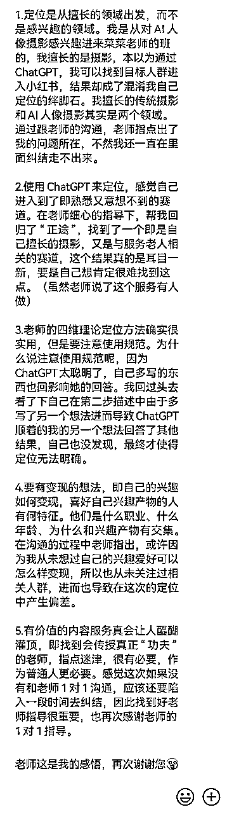
从 9 块 9 做到 39 块钱，再做到 99 块钱，再做到 199 一小时。
我的知识付费产品也是，从最初的99，做到199、299、699、再到2999、3999、4999、5999。就是这样一步步进阶的。低客单价打通了之后又去做高客单价，基于用户的需求，不断推产品。
所以说我们不要一上来想出产高客单价的产品，你如果没有第一层用户的积累，你是很难去做高客单的。
也不要一开始就有太高的赚钱预期，把每一个小项目，都看成是对自己的投资，你的心态就会健康很多。
我回顾了一下，这一年时间我到底做对了什么？
1.心态尽量佛系一点
首先是心态，它是至关重要的因素。最开始先没想我要赚很多钱，我慢慢地去输出我的价值，静待花开，比较佛系。
我现在是创业的阶段，家里也有孩子和老人，其实压力还蛮大的。
创业不像打工，都要靠自己去打猎。刚开始，我也挺焦虑的，我这样安慰自己，接下来我给自己一年的时间，我把我的营销解决方案出完。
我不管它赚不赚钱，我只要完成这个解决方案，我手头还有积蓄，我一年不赚钱也没事，如果幸运，能把基本的生活费赚回来，不用吃老本，我就太感恩了。
但是实际上，这种佛系的心态，收益反而让我比上班的时候要好很多，挺神奇的
2.主动向用户要反馈
比如说我当时在免费去给别人做定位，再去给做 9 块9、 29 块 9 这样的客单价的时候，每一次直播后，我都会去和用户要反馈。这反馈有两种好处。第一是宣传个人。好的反馈我们就把它截图发圈。当然发圈之前你还是跟学员说一下，问他同不同意。
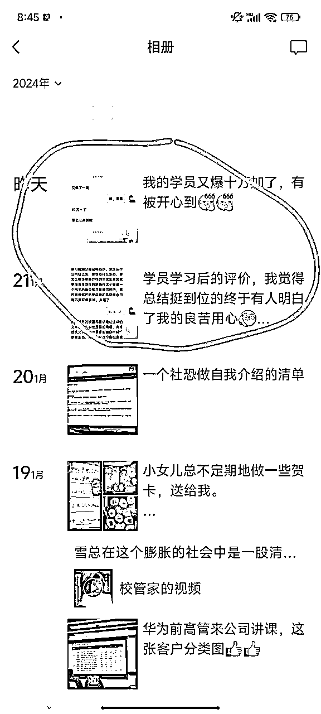
3.不断做产品或者服务的迭代
不好的反馈我们及时地去做修正。有时候，不好的反馈比正向反馈更有价值。因为解决一个卡点，意味着你能比同行更好地解决用户问题。
我这边很多的点子、建议，都是学员给的。比如说我的AI课程内容里会把命令直接给到，有的学员说，我希望学习一下，你是如何一步步生产命令的。因为希望能自己写命令，用到自己的工作场景中。
我本身是为了减少他们学习的成本，才省略了这个流程。没想到这一步大家有需求，我在做的时候，就是用的惯性思维，于是我把整个流程做了梳理，进行整体输出。
于是这个课程内容的价值又升级了好几个档次，因为它不仅仅是生产内容了，更是一种先进的思维模式，帮助别人掌握了底层的驾驭能力，能非常方便地生成各种各样有价值的提示词，让他们生成自己专属领域的解决方案，不但能提升自己的效率，还能去赋能别人。
比如我这边的学员有线下门店的老板，像美业老板、教培老板、摄影店的老板，他们用这套方法，可以去打造加盟系统中的一个业务场景——赋能客户做营销，因为三四线城市的门店工作人员，普遍营销能力都缺乏。
总结了成功的经验，再来看我赚钱路上的坑：
1.做了不擅长的事
比如说我早期在卖账号，这件事你别看简单，其实它非常考验人的技术能力，特别是网络问题突发的解决能力，但技术恰巧是我不擅长的，我连 Excel 都用不明白。我当时做了这个事后，就踩坑了。遇到了账号问题，我无法解答，只赚了别人3块钱，却要花大量的精力去答疑。有一次账号被封了之后，我还因此赔了钱。
2.陷入产品自嗨
很多做产品、做技术的人都有体会，你倒腾出一个东西，你觉得，哇，我这个东西在行业里可以排前列，但是这个产品的价值，用户根本就察觉不到，或者他压根就没有达到这么高的维度，他只需要一个简单的解决方案就好。
而比你技术更低的同行，他能够轻轻松松通过营销或者低价手段，把你打个措手不及。
所以不能陷入闭门造车的境地，你要去不断地和用户交流，你不要我自己想做什么，我就去做什么，你得贴着用户走。
3.不专注
这真的太致命。会吞噬你的时间和精力，但是让你赚不到钱。
有一本书叫《10倍比2倍更容易》，推荐大家去读一读。你假设一下，你现在要获得收入的十倍，你应该聚焦什么，你应该服务什么客户，你应该砍掉什么
好了，以上就是我的全部心路历程，我在2024年，也对自己有一个要求，就2句话，8个字：保持愚蠢、保持敬畏。
保持愚蠢就是，不要认为自己好像很专业，觉得自己了不起，再专业的人，也有可能被超越，比如现在有很多非专业文案，通过ChatGPT去教大家做自媒体，而他的非专业出身，可能会成为他的一种优势，他可能更懂普通人写作的卡点在哪里，从而去进行针对性的教学。所以保持愚蠢，你要把自己的姿态放低，你要不断地去向用户学习，去向同行学习。
保持敬畏则是对于我们行业，对于用户保持一种敬畏，去尊敬他们，真的去用心服务他们，去给到他们真正的价值。这样我们的创业或者副业项目就会更顺利，走得更长远。
希望我的分享能带给你启发和帮助，祝新的一年一切顺利。